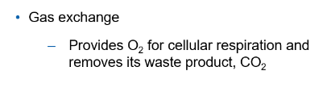
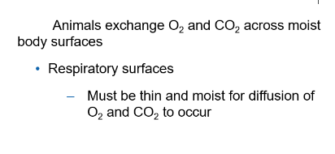
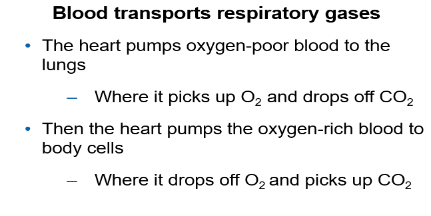

Transport and Diffusion of Gases
- Earth is surrounded by a thin envelope of air, the atmosphere. The air is most dense at sea level.
- At high altitudes, a given volume of air contains fewer air molecules than it does at sea level.
- As altitude increases, the concentration or density of air molecules decreases. As density decreases, air pressure also decreases.

- The SI unit for pressure is the Pascal (Pa). Pressure is the force of one newton exerted on an area of one square meter.
- At sea level, air pressure is 101.3 kPa.
- At the top of Mount Everest, about 8850 m above sea level, the air pressure drops to about 31 kPa.
Air density and air pressure decrease with altitude. This means that there are fewer oxygen molecules in a given volume of air at higher altitudes.
Partial Pressure
- Partial pressure is a measure of the concentration of the individual components in a mixture of gases. The total pressure exerted by the mixture is the sum of the partial pressures of the components in the mixture.
- The rate of diffusion of a gas is proportional to its partial pressure within the total gas mixture.

Partial pressures of oxygen and carbon dioxide are involved in respiration. Expressed in mmHg (millimeters of mercury).


Callout
Partial Pressure in Everyday Life
- The gases stay in solution as long as the liquid is under pressure. After the pop bottle is opened, the carbon dioxide will continue to escape from the pop until the partial pressure of the carbon dioxide in the pop is the same as the partial pressure of the carbon dioxide in the air above it.
- Partial pressures of gases affect gas exchange. Gases will diffuse across a membrane from an area of higher pressure to an area of lower pressure until the pressures are equal. The greater the pressure gradient, the higher is the rate of diffusion.
Gas Exchange
Surviving in Thin Air
The high mountains of the Himalayas
- Have claimed the lives of even the world's top mountain climbers
The air at the height of the world's highest peak, Mt. Everest
- Is so low in oxygen that most people would pass out instantly if exposed to it.
Twice a year, flocks of geese migrate over the Himalayas
- They are able to fly at such a high altitude because of the efficiency of their lungs
- These birds have blood with hemoglobin with a very high affinity for oxygen
- This adaptation allows them to carry large amounts of oxygen to their tissues to exchange with carbon dioxide





Oxygen and Carbon Dioxide Transport

Callout
The PO2 in the alveoli is higher than the PO2 in the capillaries surrounding the alveoli, so oxygen diffuses from the air in the alveoli into the blood.
Conversely, the PCO2 in the capillaries is higher than the PCO2 in the alveoli, so carbon dioxide diffuses from the blood in the capillaries to the air in the alveoli.
Oxygen diffuses from the blood into the tissue cells, and carbon dioxide diffuses from the tissue cells into the capillaries due to the differences in partial pressures.

Callout
- Hemoglobin is an iron-containing protein in red blood cells that binds with molecules of oxygen to form oxyhemoglobin.
- Oxyhemoglobin gives oxygenated blood its bright red color.
- Deoxygenated blood is dark red. Blood without hemoglobin carries only about 0.3 mL of oxygen per 100 mL of blood, while blood with hemoglobin carries about 20 mL of oxygen per 100 mL of blood. Hemoglobin increases the blood’s capacity to carry oxygen by nearly 70 times!

Effects of Altitude on Respiration
The respiratory system faces challenges at high altitudes. The atmospheric pressure at 2000 m is about 80 kPa. At 7000 m, the atmospheric pressure is only 40 kPa. Above 7000 m, the atmospheric pressure is so low that humans cannot survive
The reason is that even though oxygen still constitutes 20.9 % of the air, the density and partial pressure of oxygen are too low—there are not enough oxygen molecules in a given volume of air. A breath of air at high altitude contains fewer oxygen molecules than the same breath of air at sea level.
Depending on the altitude, the decreased oxygen supply can cause altitude sickness. The symptoms of altitude sickness include shortness of breath, headache, dizziness, tiredness, and nausea.
Callout
- Erythropoietin (EPO) is a hormone that stimulates the production of red blood cells. Increasing the number of red blood cells increases the amount of oxygen that can be absorbed from the air and delivered to the body cells.
- Some endurance athletes, such as long-distance runners and triathletes, train at high altitudes to increase the number of red blood cells
Training at high altitudes may provide a legal competitive advantage because of the additional red blood cells that the body produces naturally.

Callout
Breathing is largely an involuntary action. It is controlled by the coordinated efforts of the nervous system and the circulatory system. The normal rhythmic movements of inhalation and exhalation are controlled by signals from the respiratory center in the brain stem.
- The brain sends out signals that cause the diaphragm and external intercostal muscles to contract, causing inhalation.
- Stretch receptors in the lungs send signals back to the brain, indicating that the lungs have expanded.
- The brain then stops signaling the diaphragm and intercostal muscles, causing them to relax and bringing about exhalation.
Maintaining Oxygen and Carbon Dioxide Levels
- The levels of oxygen and carbon dioxide in the blood are continuously monitored by chemical receptors in the brain itself, in the arteries leading to the brain, and in the arteries leaving the heart.
- An increase in aerobic cellular respiration increases the amount of carbon dioxide in the blood, which in turn produces carbonic acid and lowers the pH of the blood.
- Receptors in the brain detect the decrease in pH and recognize this as a sign that carbon dioxide levels are too high.
- A decrease in the pH will trigger a signal to the respiratory center in the brain. In response, the brain sends out signals that increase both the breathing rate and the volume of inhalation by causing the diaphragm and intercostal muscles to contract more rapidly and more forcefully.